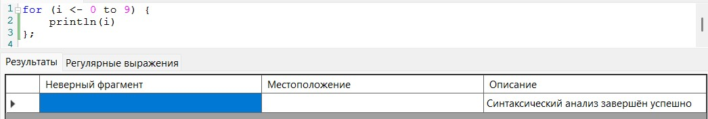
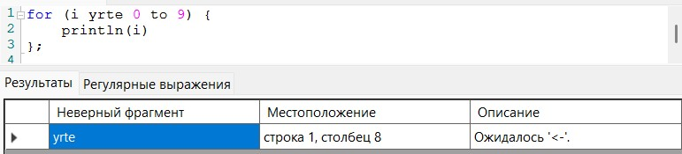
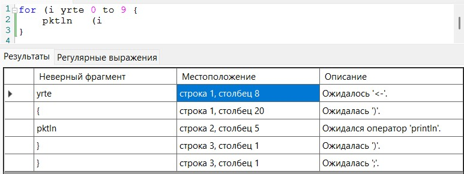
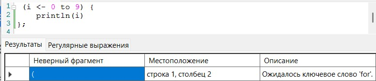
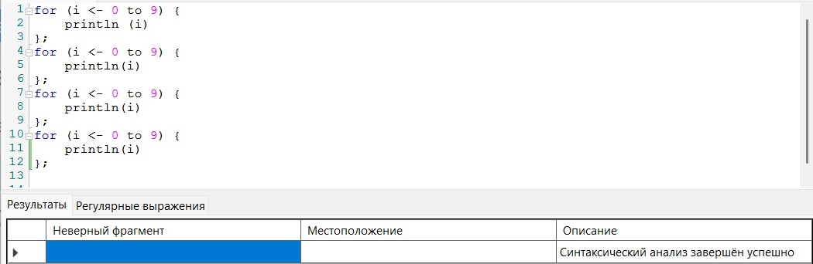
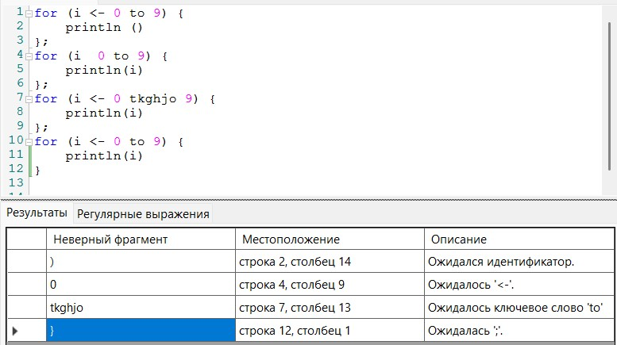
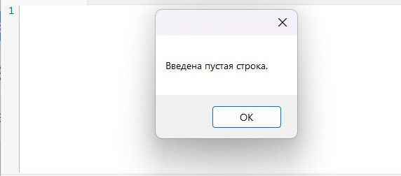

На рисунках 2–8 представлены тестовые примеры запуска разработанного синтаксического парсера для создания цикла for на языке Scala.

Рисунок 2 — тестовый пример верной конструкции

Рисунок 3 — тестовый пример конструкции с одной ошибкой

Рисунок 4 — тестовый пример конструкции с несколькими ошибками

Рисунок 5 — тестовый пример конструкции без первого ключевого слова

Рисунок 6 — тестовый пример нескольких последовательных верных конструкций

Рисунок 7 — тестовый пример ошибок в нескольких последовательных конструкциях

Рисунок 8 — тестовый пример ввода пустой строки